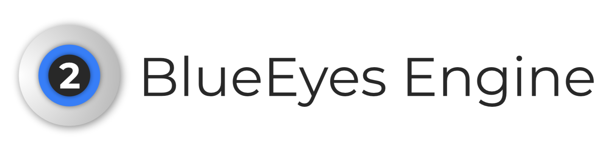

「藍眼引擎」是一個由鐘柏倫所設計的 CSS 模板
使用
<link rel="stylesheet" href="BlueEyesEngine/BlueEyesEngine.css">
樣式預覧
<button>
<dialog>
<input type="date">
<input type="text">
<input type="number">
<select>
版本歷程記錄
----------------------------------------------------------
[2.0.0] 2023/02/20
----------------------------------------------------------
* 首次公開發行